Manual Interativo de Cálculos Trabalhistas
Um guia completo e interativo para entender os cálculos na esfera judicial trabalhista.
Configuração de Impressão
A impressão é configurada no menu Imprimir, com a seleção de todos os relatórios necessários para a juntada ao processo judicial.
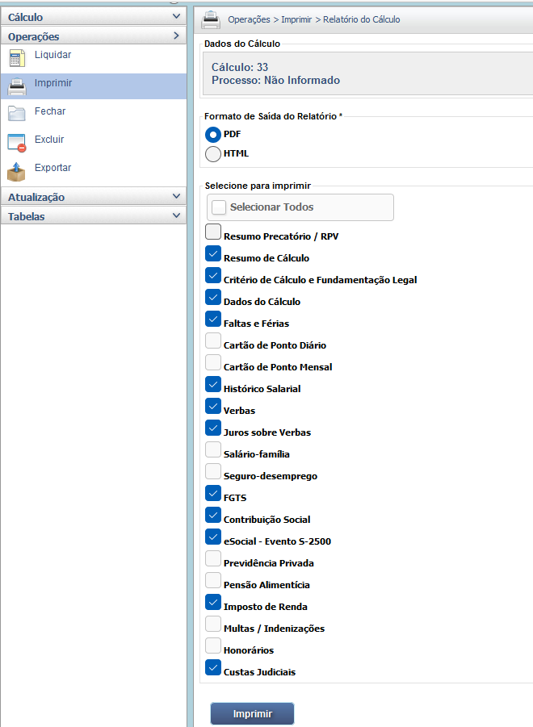
Planilha de Cálculo Impresso
As páginas impressas detalham o resumo da liquidação, o critério legal, os dados do cálculo, o histórico salarial, o demonstrativo individual de cada verba, as deduções (INSS, IR) e as custas judiciais.
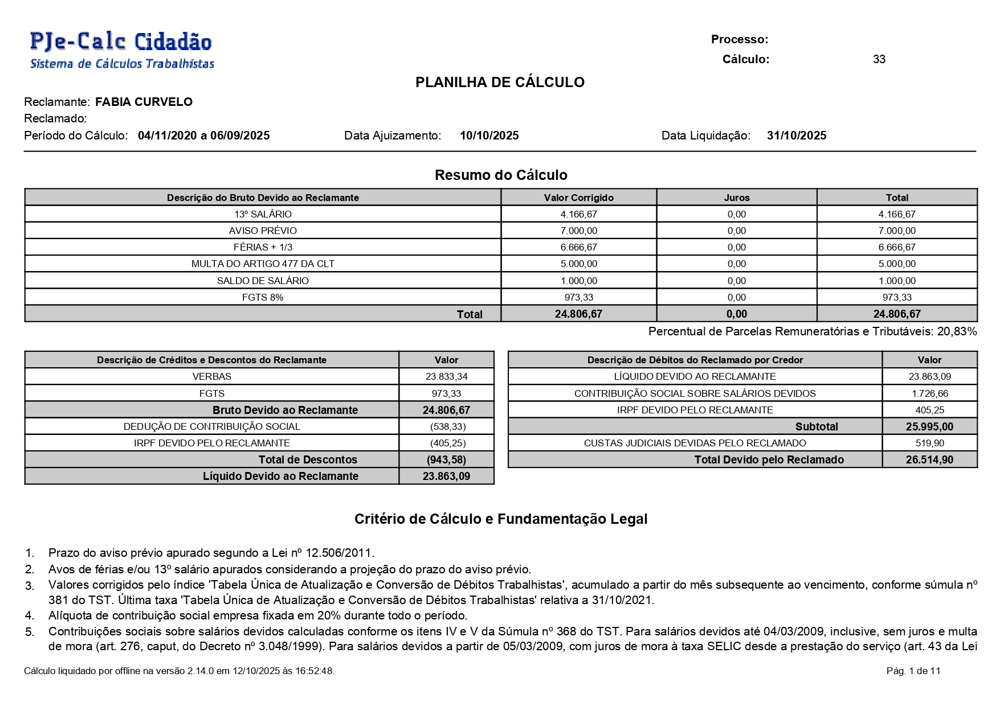 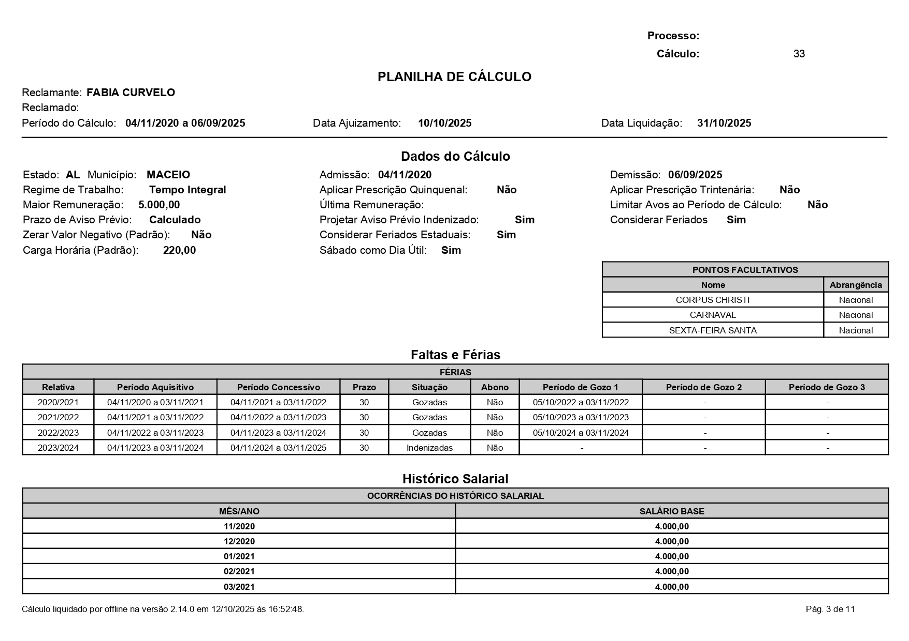 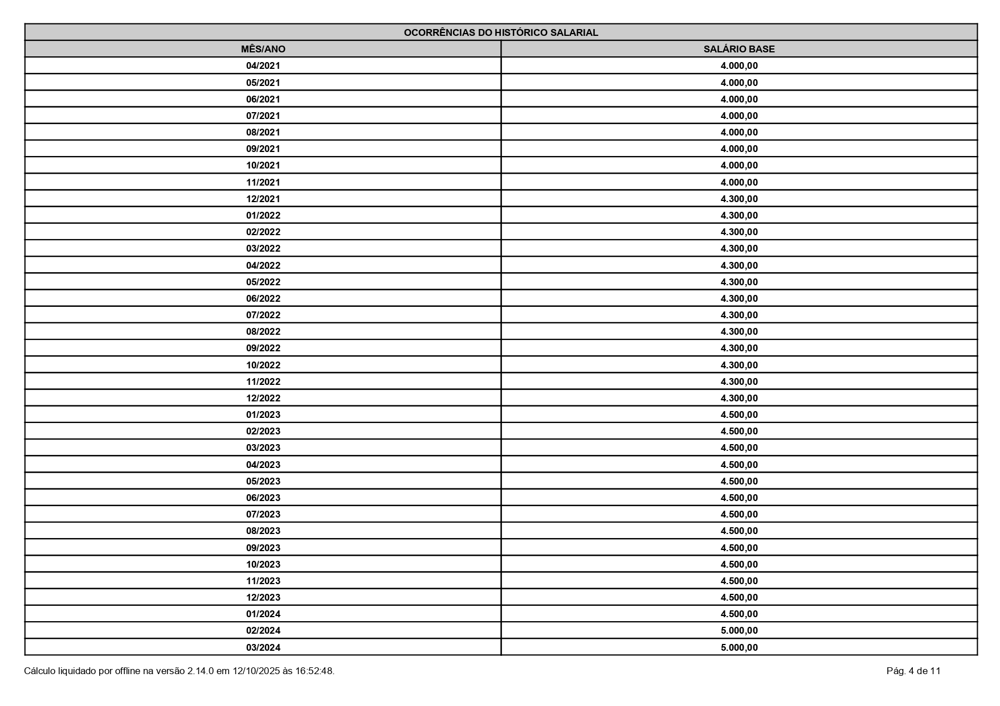 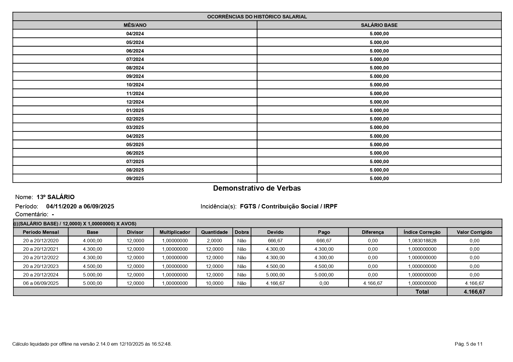 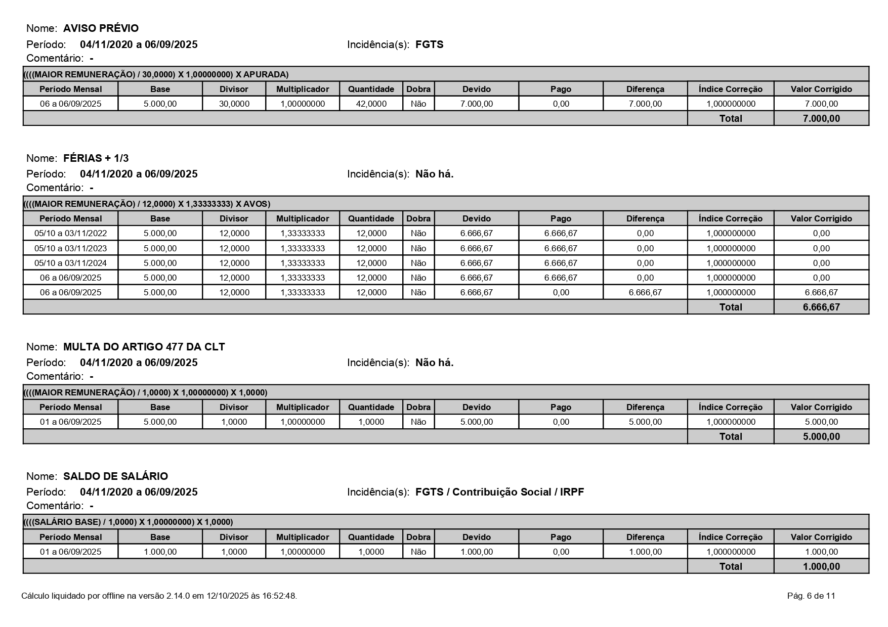 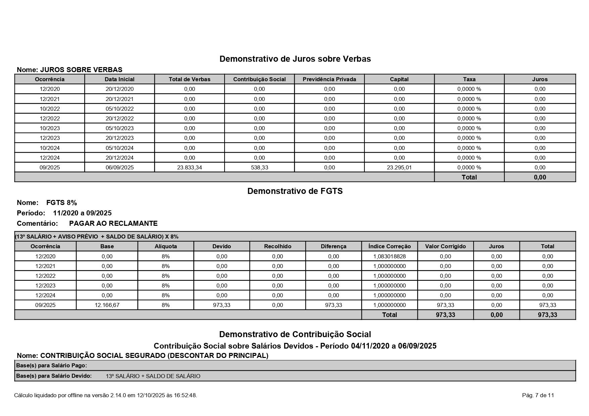 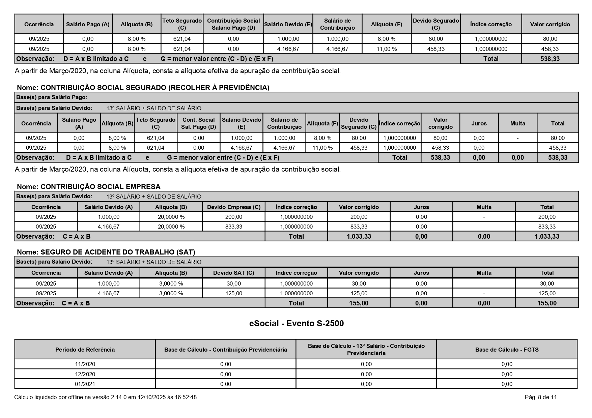 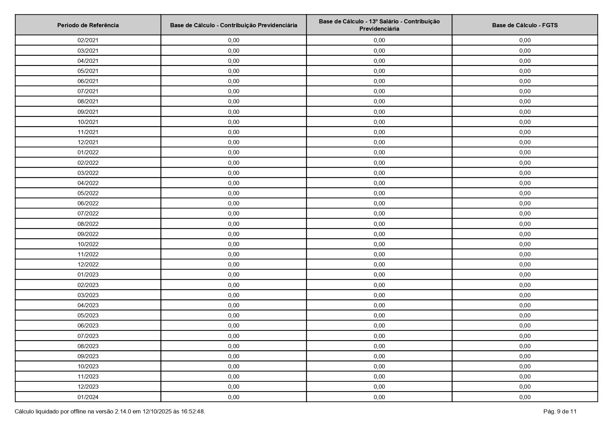 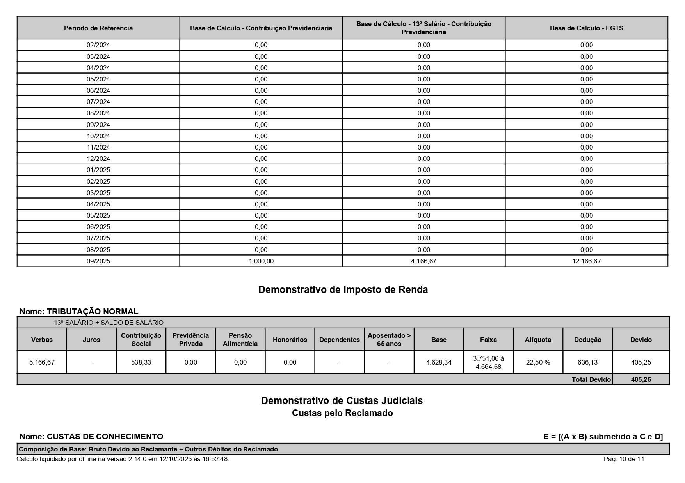 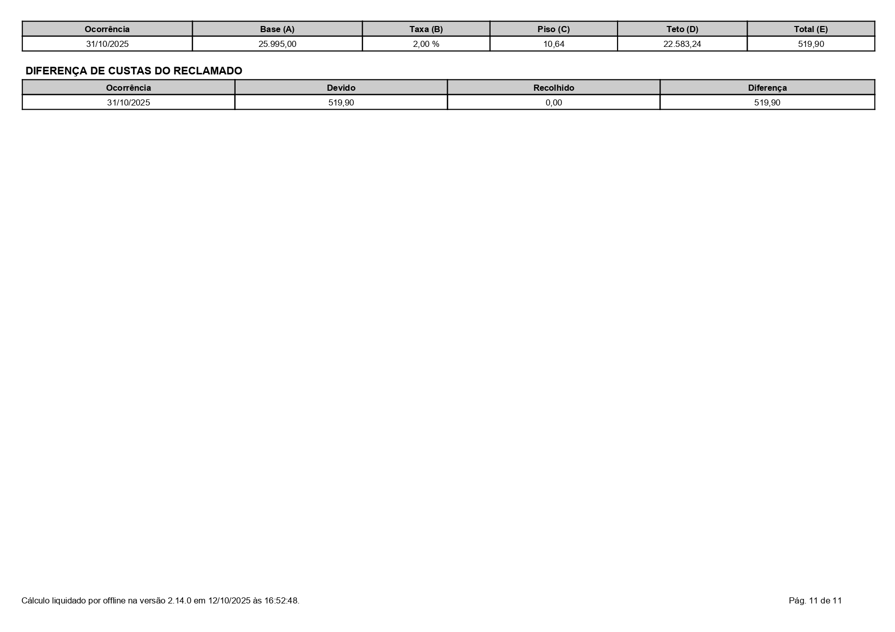